수학의 기초 | 4. 행렬
1 행렬 기초
1.1 개념
1.1.1 통계학과 행렬
행렬은 통계학에서 데이터를 표현하고 분석하는 데 핵심적인 도구로 사용된다. 행렬은 대규모 데이터의 구조를 간단히 표현하고, 계산을 효율적으로 수행하여 통계학에서 중요한 역할을 한다.
데이터 표현: 데이터를 행렬로 저장하여 표 형식으로 표현한다. 다음은 관측값(행)과 변수(열)로 구성된 데이터 행렬이다.
\[X = \begin{bmatrix} x_{11} & x_{12} & \cdots & x_{1p} \\ x_{21} & x_{22} & \cdots & x_{2p} \\ \vdots & \vdots & \ddots & \vdots \\ x_{n1} & x_{n2} & \cdots & x_{np} \end{bmatrix}\]
연산의 간결화: 여러 변수와 관측값 간의 관계를 분석할 때 행렬식으로 간단히 표현하고 행렬 연산을 이용하여 추정값을 계산한다.
\[Y = X\beta + \epsilon, \qquad \text{OLS 추정} = \hat{\beta} = (X'X)^{-1}X'Y\]
1.1.2 정의
행렬 (Matrix)
행과 열로 배열된 숫자, 기호 또는 표현식의 직사각형 배열을 행렬이라 한다. 행의 차수는 \(m\), 열의 차수는 \(n\)이다.
\[A_{m \times n} = \begin{bmatrix} a_{11} & a_{12} & \cdots & a_{1n} \\ a_{21} & a_{22} & \cdots & a_{2n} \\ \vdots & \vdots & \ddots & \vdots \\ a_{m1} & a_{m2} & \cdots & a_{mn} \end{bmatrix} \qquad \text{(간편식)} \quad A = \{a_{ij}\}\]
- 행렬의 각 셀을 원소(element)라 한다.
- 행의 차수 \(m = 1\)인 행렬을 행(row) 벡터이다.
- 열의 차수 \(n = 1\)인 행렬을 열(column) 벡터이다.
- 행의 차수, 열의 차수 모두 1인 행렬을 스칼라(scalar)이다.
- 행렬을 \(n\)-열벡터로 표현: \(A_{m \times n} = \begin{bmatrix} a_1 & a_2 & \cdots & a_n \end{bmatrix}\)
- 행렬을 \(m\)-행벡터로 표현: \(A_{m \times n} = \left[\begin{array}{r} a_1 \\ a_2 \\ \vdots \\ a_m \end{array}\right]\)
1.1.3 동일 행렬이란
- 행의 차수와 열의 차수가 같다. \(A_{m \times n} = B_{m \times n}\)
- 대응하는 모든 원소 값은 동일하다. \(a_{ij} = b_{ij}\) for all \(i, j\)
1.2 특수한 행렬
| 행렬 종류 | 정의 | 기호 |
|---|---|---|
| 영행렬 (zero matrix) | 모든 원소가 0 | \(O_{m \times n}\) |
| 정방행렬 (square matrix) | 행차수 = 열차수 | \(A_{m \times m} = A_m\) |
| 대각행렬 (diagonal matrix) | 대각원소 외 모두 0 | \(A_{ij} = 0\) for \(i \neq j\) |
| 단위행렬 (identity matrix) | 대각원소=1, 나머지=0 | \(I_{ij} = \begin{cases} 1 & i=j \\ 0 & i \neq j \end{cases}\) |
| 상삼각행렬 (upper triangular) | 대각 아래 원소가 0 | \(A_{ij} = 0\) for \(i > j\) |
| 하삼각행렬 (lower triangular) | 대각 위 원소가 0 | \(A_{ij} = 0\) for \(i < j\) |
대각행렬 예시:
\[D = \begin{pmatrix} -1 & 0 \\ 0 & 7 \end{pmatrix}, \qquad tr(D) = -1 + 7 = 6\]
단위행렬 확장 예시:
\[A = \begin{bmatrix} 1 & 2 & 3 \\ 3 & 4 & 5 \end{bmatrix} \implies \begin{bmatrix} I & A \\ 0 & I \end{bmatrix} = \begin{bmatrix} 1 & 0 & 1 & 2 & 3 \\ 0 & 1 & 3 & 4 & 5 \\ 0 & 0 & 1 & 0 & 0 \\ 0 & 0 & 0 & 1 & 0 \\ 0 & 0 & 0 & 0 & 1 \end{bmatrix}\]
희소행렬 (Sparse matrix): 행렬 원소의 대부분이 0인 행렬이다. \(nnz(A)\)은 행렬 \(A_{m \times n}\)에서 0이 아닌 원소의 개수를 나타내며 \(nnz(A)/(m \times n)\)을 행렬의 밀도라 정의한다.
수학자 James H. Wilkinson의 정의: “행렬이 충분히 많은 0 원소를 포함하고 있어 이를 활용하는 것이 유리한 경우, 그 행렬을 희소 행렬이라 한다.” 희소행렬은 컴퓨터에서 효율적으로 저장하고 조작할 수 있다.
영행렬 > 단위행렬 > 대각행렬 > 삼각행렬 : 대표적인 희소행렬
1.3 행렬 놈
행렬 놈 (Matrix Norm)
모든 원소의 제곱합의 양의 제곱근:
\[\|A\| = \sqrt{\sum_{i=1}^{m}\sum_{j=1}^{n} a_{ij}^2}\]
행렬의 평균제곱근: \(RMS(A) = \dfrac{\|A\|}{\sqrt{mn}}\)
성질
| 성질 | 수식 |
|---|---|
| 비음수 | \(\|A\| \geq 0\) |
| 스칼라 곱 | \(\|cA\| = |c| \|A\|\) |
| 삼각 부등식 | \(\|A + B\| \leq \|A\| + \|B\|\) |
| 거리 | \(\|A - B\|\): 두 행렬의 유사성(거리) |
| 전치 불변 | \(\|A\| = \|A^T\|\) |
1.4 전치
전치(transpose)는 행과 열을 서로 바꾸는 연산: \((A^T)_{ij} = A_{ji}\)
| 성질 | 수식 |
|---|---|
| 이중 전치 | \((A^T)^T = A\) |
| 합의 전치 | \((A + B)^T = A^T + B^T\) |
| 스칼라 곱 전치 | \((cA)^T = cA^T\) |
| 곱의 전치 | \((AB)^T = B^T A^T\) |
원행렬과 전치행렬이 동일한 행렬을 대칭행렬이라 한다. \(A = A^T\)
2 행렬 연산
2.1 행렬 합 연산
행렬의 합은 두 행렬의 차수가 동일해야 하며(conformable for addition), 각 행렬에서 대응하는 원소들의 합을 그 위치에 적으면 된다.
\[(A + B)_{m \times n} = \{a_{ij} + b_{ij}\}\]
【예제】
\[\begin{bmatrix} 1 & 3 & 5 \\ 7 & 3 & 1 \end{bmatrix} + \begin{bmatrix} 1 & 0 & 1 \\ -1 & 1 & 0 \end{bmatrix} = \begin{bmatrix} 2 & 3 & 6 \\ 6 & 4 & 1 \end{bmatrix}\]
성질
| 성질 | 수식 |
|---|---|
| 교환법칙 | \(A + B = B + A\) |
| 결합법칙 | \(A + (B + C) = (A + B) + C\) |
| 영행렬과 합 | \(A + O = O + A = A\) |
| 합의 전치 | \((A + B)^T = A^T + B^T\) |
2.2 스칼라-행렬 곱
행렬 모든 원소에 스칼라를 곱하며, 결과는 원행렬과 동일한 차수의 행렬이다. \(cA = \{ca_{ij}\} = Ac\)
| 성질 | 수식 |
|---|---|
| 전치 | \((cA)^T = cA^T\) |
| 배분법칙 | \((c + d)A = cA + dA\) |
2.3 행렬×벡터 곱
행렬×벡터 곱
행렬 \(A_{m \times n}\)와 열벡터 \(x_{n \times 1}\) 곱 연산의 결과는 열벡터 \(y_{m \times 1} = A_{m \times n}x_{n \times 1}\)이며 차수는 \(m\)이다.
- 연산 가능 조건: 앞 행렬의 열차수와 뒤 벡터의 행차수가 동일해야 한다.
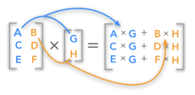
행 측면
\(A\)의 \(i\)-번째 행벡터를 \(a_i^T\)라 하면: \[y_i = a_i^T x \quad \text{(내적)}\]
열 측면
\(A\)의 \(k\)-번째 열벡터를 \(a_k\)라 하면: \[y = x_1 a_1 + x_2 a_2 + \cdots + x_n a_n\]
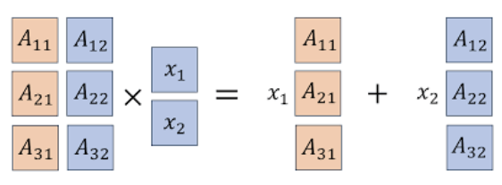
행렬 \(A\)의 열벡터 선형독립: 만약 \(x = 0\)인 경우에만 \(Ax = 0\)이 성립하면, 열벡터는 선형독립이다.
활용
| 활용 | 설명 |
|---|---|
| \(A\)가 영행렬 | \(Ax = \mathbf{0}\) |
| \(A\)가 단위행렬 | \(Ax = x\) |
| \(j\)-번째 열벡터 | \(Ae_j = a_j\) |
| \(i\)-번째 행벡터 | \((A^T e_i)^T\) |
예제
- (예측데이터 행렬) Feature matrix \(X_{N \times n}\)는 \(N\)개의 객체에 대한 특성 \(n\)-벡터, 객체들에 대한 가중치 \(w\)-벡터(차수 \(N\))라 하면 \(X^T w\)는 객체들에 대한 가중 점수 벡터이다.
- (포트폴리오) 포트폴리오 자산 수익률 행렬 \(R_{T \times n}\)(\(T\) 기간 동안 \(n\)개의 자산 수익률)이라 하고 \(w\)를 포트폴리오 \(n\)-벡터라 하면 \(Rw\)는 \(T\)기간 포트폴리오 수익률이다.
- (문서 점수화) \(A\)는 \(N \times n\) 문서-단어 행렬, \(w\)는 단어 가중치 \(n\)-벡터이면 \(Aw\)는 각 문서의 점수 \(N\)-벡터이다.
2.4 행렬×행렬 곱
2.4.1 정의
행렬 곱 (Matrix Product)
앞 행렬의 열차수와 뒤 행렬의 행차수가 일치해야 곱이 가능하다(conformable for product). 결과의 차수는 앞 행렬의 행차수, 뒤 행렬의 열차수를 갖는다.
\[A_{m \times n} B_{n \times p} = (AB)_{m \times p}, \qquad (AB)_{ij} = \sum_{k=1}^n a_{ik} b_{kj}\]
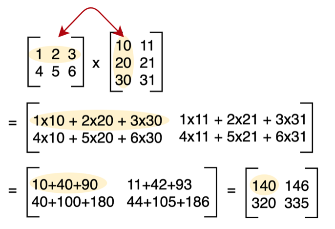
2.4.2 곱의 성질
| 성질 | 수식 |
|---|---|
| 결합법칙 | \((AB)C = A(BC)\) |
| 배분법칙 | \(A(B + C) = AB + AC\) |
| 전치 | \((AB)^T = B^T A^T\) |
| 전개 | \((A + B)(C + D) = AC + AD + BC + BD\) |
| 내적 | \(y^T(Ax) = (y^T A)x = (A^T y)^T x\) |
2.4.3 행렬의 거듭제곱
\[A^2 = AA, \quad A^3 = AAA, \quad A^4 = AAAA, \quad \cdots\]
directed graph: 인접(adjacency) 행렬 \(A_{ij}\)를 다음과 같이 정의하자.
\[A_{ij} = \begin{cases} 1 & \text{there is an edge from vertex } j \text{ to vertex } i \\ 0 & \text{otherwise} \end{cases}\]
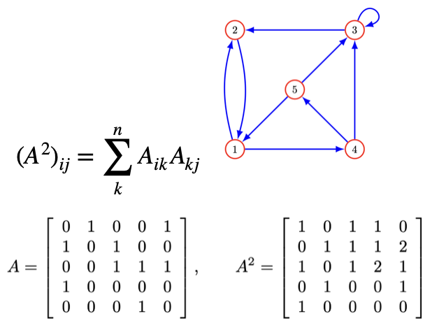
2.4.4 멱등행렬 (Idempotent Matrix)
자신의 행렬 곱이 자신이 되는 행렬을 멱등행렬이라 한다. \(M^2 = M^3 = \cdots = M\). 자신의 곱이 연산 가능해야 하므로 멱등행렬이려면 정방행렬이어야 한다.
2.5 QR 분해
Q는 직교정규행렬, R은 상삼각행렬
2.5.1 직교정규행렬 (Orthonormal Matrix)
직교정규행렬
열벡터 \(A_{m \times n}\)의 \(n\)-벡터 \(a_1, a_2, \ldots, a_m\)들이 orthonormal하면, 즉 \(A^T A = I\)를 만족하는 행렬을 직교정규행렬이라 한다.
만약 \(A_{m \times n}\)가 직교정규행렬, \(x, y\)는 \(n\)-벡터라 하면:
| 성질 | 수식 |
|---|---|
| 놈 보존 | \(\|Ax\| = \|x\|\) |
| 내적 보존 | \((Ax)^T(Ay) = x^T y\) |
| 각도 보존 | \(\angle(Ax, Ay) = \angle(x, y)\) |
【recall】 Gram-Schmidt 알고리즘
만약 벡터들이 선형독립이라면, Gram-Schmidt 알고리즘은 직교정규 벡터 \(q_1, q_2, \ldots, q_k\)를 생성한다.
2.5.2 QR 분해 \(A = QR\)
행렬 \(A_{n \times k}\)의 \(n\)-벡터 \(a_1, a_2, \ldots, a_k\)가 선형독립인 경우, Gram-Schmidt 알고리즘을 적용하여 얻은 직교정규 벡터 \(q_1, q_2, \ldots, q_k\)로 직교정규 행렬 \(Q\)를 생성하면 \(Q^T Q = I\)이다.
\(a_i\)와 \(q_i\)의 관계식:
\[a_i = (q_1^T a_i)q_1 + \cdots + (q_{i-1}^T a_i)q_{i-1} + \|\tilde{q}_i\| q_i\]
이를 다시 쓰면 \(a_i = R_{1i}q_1 + R_{2i}q_2 + \cdots + R_{ii}q_i\)이다.
\[R_{ij} = q_i^T a_j \text{ for } i < j, \qquad R_{ij} = 0 \text{ for } i > j, \qquad R_{ii} = \|\tilde{q}_i\|\]
그러므로 \(A_{n \times k}\)(열이 독립인 행렬)은 직교정규 행렬 \(Q_{n \times k}\)과 상삼각행렬 \(R_{k \times k}\)로 분해된다.
2.5.3 QR 분해 활용
| 활용 | 설명 |
|---|---|
| 선형 시스템 해 | \(A = QR\) 분해 후 \(Rx = Q^T b\)를 후진 대입으로 풀기 |
| 최소자승 문제 | \(\hat{x} = R^{-1} Q^T b\) |
| 고유값 계산 | QR 알고리즘으로 상삼각 변환 후 고유값 추출 |
| 행렬 특성 분석 | 계수(rank) 결정, 정칙 여부 파악 |
import numpy as np
A = np.array([[1, 1], [1, -1], [1, 1]])
Q, R = np.linalg.qr(A)
print("Q:"); print(Q)
print("\nR:"); print(R)【결과】 Q: [[-0.57735027 0.40824829] [-0.57735027 -0.81649658] [-0.57735027 0.40824829]]
R: [[-1.73205081 -0.57735027] [ 0. 1.63299316]]
2.6 역행렬
2.6.1 왼쪽·오른쪽 역행렬
역행렬 존재 조건
- left-invertible: \(XA = I\)를 만족하는 \(X\)가 존재하면 \(A\)는 left-invertible이다.
- right-invertible: \(AX = I\)를 만족하는 \(X\)가 존재하면 \(A\)는 right-invertible이다.
left-invertible ↔︎ 열벡터 선형독립: \(A\)가 left-inverse 행렬 \(C\)를 가지면 \(A\)의 열벡터는 선형독립이다.
【증명】 \(Ax = 0 \Rightarrow 0 = C(Ax) = Ix = x\), 즉 \(x = 0\)이므로 선형독립.
연립방정식 해:
Left-invertible \(C\) 이용:
\[x_n = C_{n \times n} b_n\]
Right-invertible \(B\) 이용:
\(x = Bb\). 【증명】 \(Ax = A(Bb) = (AB)b = b\)
left, right invertible 관계: \(A\)의 right inverse \(B\)가 있으면 \(B^T\)는 \(A^T\)의 left inverse이다.
【증명】 \(AB = I \Rightarrow (AB)^T = I^T \Rightarrow B^T A^T = I\)
2.6.2 역행렬 구하기
역행렬 (Inverse Matrix)
행렬 \(A\)에 무엇을 곱하면 항등행렬 \(I\)가 될까? 이를 역행렬이라 한다.
\[AA^{-1} = A^{-1}A = I, \qquad A^{-1} = \frac{1}{|A|} adj(A)\]
행렬식(determinant): 정방행렬에서만 계산되며 결과는 스칼라이다. 기호: \(det(A)\) 또는 \(|A|\)
\[A_{2 \times 2} = \begin{bmatrix} a & b \\ c & d \end{bmatrix} \implies det(A) = ad - bc\]
【예제】 \(A = \begin{bmatrix} 1 & 3 \\ 2 & 4 \end{bmatrix}\), \(|A| = 4 - 6 = -2\)
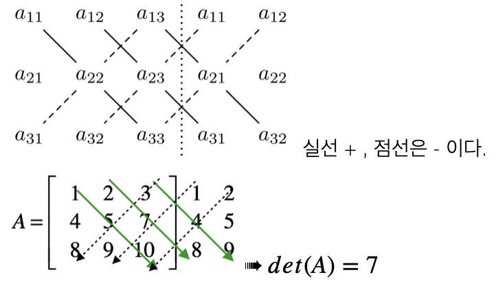
행렬식 성질
| 성질 | 수식 |
|---|---|
| 전치 불변 | \(|A^T| = |A|\) |
| 순서 무관 | \(|AB| = |BA|\) |
| 곱의 행렬식 | \(|AB| = |A||B|\) |
| 열 연산 | 한 열에 \(k\)배 후 다른 열에 더해도 행렬식 불변 |
| 선형종속 | 한 열이 다른 열의 선형결합이면 행렬식 = 0 |
소행렬(minor): \(i\)행, \(j\)열을 제외한 행렬을 소행렬 \(M_{ij}\), 소행렬의 행렬식을 소행렬식 \(|M_{ij}|\)라 한다.
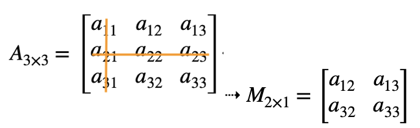
여인수(cofactor): \(C_{ij} = (-1)^{i+j}|M_{ij}|\)
\[|A_{n \times n}| = \sum_{i=1}^n a_{ij}(-1)^{i+j}|M_{ij}| = \sum_{j=1}^n a_{ij}(-1)^{i+j}|M_{ij}|\]
수반행렬(adjoint):
\[C_{ij} = \begin{bmatrix} C_{11} & C_{12} & C_{13} \\ C_{21} & C_{22} & C_{23} \\ C_{31} & C_{32} & C_{33} \end{bmatrix} \implies adj(A) = \begin{bmatrix} C_{11} & C_{21} & C_{31} \\ C_{12} & C_{22} & C_{32} \\ C_{13} & C_{23} & C_{33} \end{bmatrix}\]
역행렬 성질
| 성질 | 수식 |
|---|---|
| 유일성 | \((A^{-1})^{-1} = A\) |
| 곱의 역행렬 | \((AB)^{-1} = B^{-1}A^{-1}\) |
| 전치의 역행렬 | \((A^T)^{-1} = (A^{-1})^T\) |
| 행렬식 | \(|A^{-1}| = \frac{1}{|A|}\) |
계수(rank): 행렬 \(A_{n \times n}\)에서 선형독립인 행의 개수와 열의 개수 중 작은 것을 행렬의 계수라 한다. 행렬의 차수와 계수가 동일하면 full-rank라 한다.
역행렬 존재 조건 정리
| 역행렬 \(A^{-1}\) 존재 | 역행렬 \(A^{-1}\) 不존재 |
|---|---|
| 행렬식 ≠ 0: \(det(A) \neq 0\) | 행렬식 = 0: \(det(A) = 0\) |
| full rank: \(rank(A) = n\) | not full rank: \(rank(A) < n\) |
| non-singular | singular |
| \(AX = \mathbf{b}\) 해 존재 | \(AX = \mathbf{b}\) 해 없음 |
3 행렬 활용
3.1 연립방정식 해 구하기 \(Ax = b\)
① QR 분해 이용
- \(A = QR\)로 분해
- \(Q^T b\) 계산
- \(Rx = Q^T b\)를 후진 제거로 풀기
② 역행렬 계산 \(A^{-1}\)
행렬 \(A\)의 역행렬을 이용하여 해를 구한다.
\[\hat{x} = A^{-1}b\]
3.2 최소자승법 \(Ax = b\)
3.2.1 최소자승 문제
\(A_{m \times n}x_n = b_m\) (단 \(m > n\))에서 방정식이 변수보다 많으므로 일반적으로 해가 없다. 잔차 \(r = Ax - b\)를 최소화하는 \(x\)를 찾는 것을 최소자승법이라 한다.
\[\text{minimize} \quad \|Ax - b\|\]
【예제】 방정식 3개, 미지수 2개
\(2x_1 = 1, \; -x_1 + x_2 = 0, \; 2x_2 = -1\)
\[Ax = b: \quad \begin{bmatrix} 2 & 0 \\ -1 & 1 \\ 0 & 2 \end{bmatrix}\begin{bmatrix} x_1 \\ x_2 \end{bmatrix} = \begin{bmatrix} 1 \\ 0 \\ -1 \end{bmatrix}\]
3.2.2 최소자승 해 구하기
최소자승 해 (Least Squares Solution)
\(\text{minimize} \; f(x) = \|Ax - b\|^2\)의 해 \(\hat{x}\)는 \(\nabla f(x) = 2A^T(Ax - b) = 0\)에서:
\[\hat{x} = (A^T A)^{-1} A^T b\]
QR 분해 이용: \(A = QR\)이면 \(\hat{x} = R^{-1}Q^T b\), \(\; RMS = \sqrt{\|b - A\hat{x}\|^2}\)
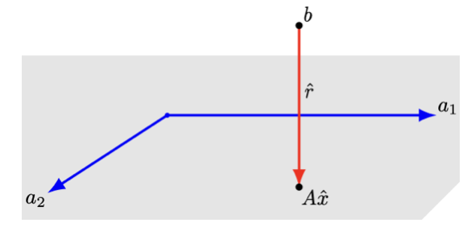
매출 광고 사례
행은 사회인구학적 특성 10개, 열은 3개 광고 채널이고 \(R_{ij}\)는 \(i\)-사회인구학적특성의 \(j\)-광고채널의 1달러당 노출횟수(단위: 1000)이다.
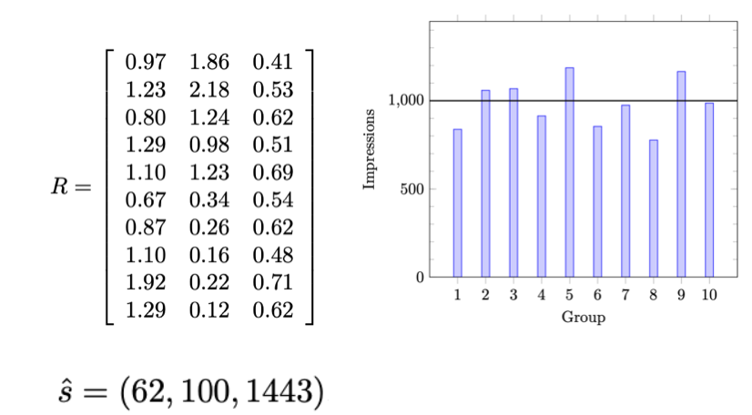
\(R_{10 \times 3}x_3 = 10^3 \mathbf{1}_3\)에 대한 최소자승해는 \(\hat{x} = (62, 100, 1443)\)으로 각 채널당 광고비이다. \(RMS = 13.2\%\)이다.
3.2.3 최소자승 데이터 적합
\(n\)-벡터 \(x\)(feature 벡터, 독립변수), 스칼라 \(y\)는 다음 근사 함수 관계가 있다고 하자: \(y \approx \hat{f}(x)\)
\(\hat{f}(x)\)는 파라미터 \(p\)-벡터 \(\theta\)의 선형 함수이다.
\[\hat{f}(x) = \theta_1 f_1(x) + \theta_2 f_2(x) + \cdots + \theta_p f_p(x)\]
최소자승 모델 적합 (\(i = 1, 2, \ldots, N\); \(j = 1, 2, \ldots, p\))
\[\hat{y}^{(i)} = A_{i1}\theta_1 + A_{i2}\theta_2 + \cdots + A_{ip}\theta_p, \quad \text{where} \quad A_{ij} = \hat{f}_j(x^{(i)})\]
\(\hat{y}^d = A\theta\)이므로 \(\|r^d\|^2 = \|y^d - A\theta\|^2\)이다.
\[\hat{\theta} = (A^T A)^{-1} A^T y^d\]
3.2.4 다항식 적합
모형: \(\hat{f}(x) = \theta_1 + \theta_2 x + \cdots + \theta_p x^{p-1}\)
\[A = \begin{bmatrix} 1 & x^{(1)} & \cdots & (x^{(1)})^{p-1} \\ 1 & x^{(2)} & \cdots & (x^{(2)})^{p-1} \\ \vdots & & & \vdots \\ 1 & x^{(N)} & \cdots & (x^{(N)})^{p-1} \end{bmatrix}\]
Piecewise-Linear Fit (분절선형 적합)
- 절단점 식별: 선의 기울기가 변하는 지점을 결정한다.
- 선형 구간 적합: 절단점으로 분리된 각 데이터 구간에 선형 모델을 적합한다.
- 구간 결합: 절단점에서 구간함수를 연결하여 연속적인 분절선형 함수를 형성한다.
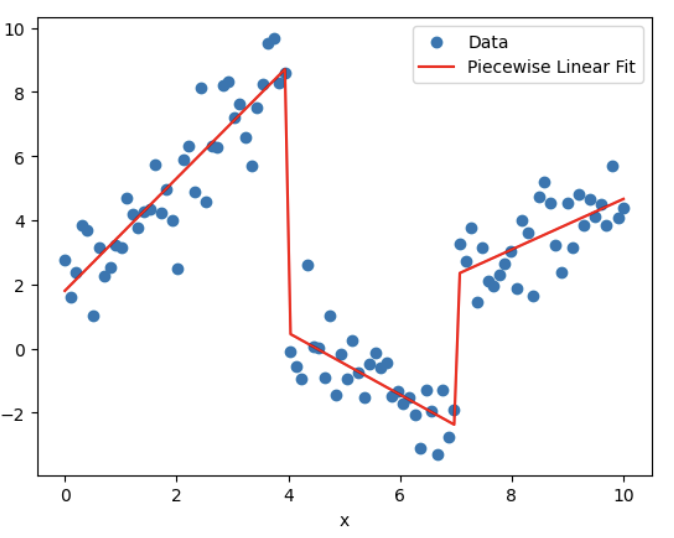
import numpy as np
import matplotlib.pyplot as plt
from scipy.optimize import curve_fit
np.random.seed(0)
x = np.linspace(0, 10, 100)
y = np.piecewise(x, [x < 4, (x >= 4) & (x < 7), x >= 7],
[lambda x: 2*x + 1 + np.random.normal(size=len(x)),
lambda x: -x + 5 + np.random.normal(size=len(x)),
lambda x: 0.5*x - 1 + np.random.normal(size=len(x))])
def piecewise_linear(x, x0, x1, y0, y1, y2, k1, k2, k3):
conds = [x < x0, (x >= x0) & (x < x1), x >= x1]
funcs = [lambda x: k1*x + y0, lambda x: k2*x + y1, lambda x: k3*x + y2]
return np.piecewise(x, conds, funcs)
p0 = [4, 7, 1, 5, -1, 2, -1, 0.5]
params, _ = curve_fit(piecewise_linear, x, y, p0=p0)
x_fit = np.linspace(0, 10, 100)
y_fit = piecewise_linear(x_fit, *params)
plt.scatter(x, y, label='Data')
plt.plot(x_fit, y_fit, color='red', label='Piecewise Linear Fit')
plt.xlabel('x'); plt.ylabel('y'); plt.legend(); plt.show()3.3 간선행렬 \(Ax = b\)
간선행렬(Incidence matrix)은 그래프 이론에서 정점(vertices)과 간선(edges, nodes) 사이의 관계를 나타내는 행렬이다.
간선 행렬 \(G_{n \times m}\)은 정점이 \(n\)개, 간선이 \(m\)개이다.
| 원소 | 조건 | 의미 |
|---|---|---|
| \(A_{ij} = 1\) | 정점 \(i\)와 간선 \(j\)가 연결 | 정점 \(i\)는 간선 \(j\)의 끝(head) 정점 |
| \(A_{ij} = -1\) | 정점 \(i\)와 간선 \(j\)가 연결 | 정점 \(i\)는 간선 \(j\)의 시작(tail) 정점 |
| \(A_{ij} = 0\) | — | 정점 \(i\)와 간선 \(j\)는 연결되지 않음 |
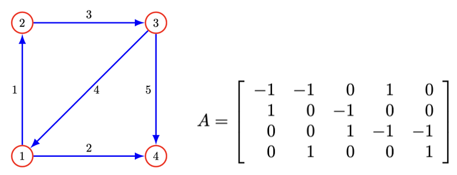
3.4 네트워크
만약 \(x\)가 네트워크에서의 흐름을 나타내는 \(m\)-벡터라면, \(x_j\)는 간선 \(j\)를 통한 흐름으로 해석된다. 양의 값은 흐름이 간선 \(j\)의 방향으로, 음의 값은 반대 방향으로 이동함을 의미한다.
네트워크 구조를 나타내는 \(G_{n \times m}\)를 사용하여 \(y = Gx\)는 각 노드로 들어오는 순흐름을 나타내는 \(n\)-벡터이다. \(y_i\)는 \(i\)-노드의 흐름 잉여(surplus)이다.
만약 \(Gx = 0\)이면 각 노드에서 들어오는 흐름과 나가는 흐름이 일치하여 흐름 보존이 일어난다.
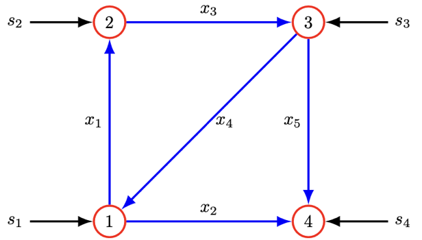
소스(source): \(s_i > 0\)이면 외부에서 들어오는 흐름, \(s_i < 0\)이면 싱크(sink)라 한다.
\[\text{소스 포함된 흐름 보전: } Ax + s = 0\]
3.5 선형함수 모델 \(Ax = b\)
두 변수 집합 간의 선형 함수를 모형(model) 또는 근사(approximation) 값으로 정의한다.
3.5.1 수요의 가격 탄력성 (Price Elasticity of Demand)
가격 \(n\)-벡터 \(p\), 수요 \(n\)-벡터 \(d\), 가격변화 \(\delta^{price}_i = \frac{p_i^{new} - p_i}{p_i}\), 수요변화 \(\delta^{dem}_i = \frac{d_i^{new} - d_i}{d_i}\)라 하면:
\[\delta^{dem} = E^d \delta^{price}, \quad E^d \text{는 } (n \times n) \text{ 수요 탄력성 행렬}\]
\(E_{11}^d = -0.4\), \(E_{21}^d = 0.2\)이면, 첫 번째 상품의 가격이 1% 증가할 때 첫 번째 상품의 수요는 0.4% 감소하고 두 번째 상품의 수요는 0.2% 증가한다.
3.5.2 탄성 변형 (Elastic Deformation)
\(f\)를 구조물에 작용하는 힘(하중) \(n\)-벡터, \(d\)를 \(m\)개 지점의 변위 \(m\)-벡터라 하면 변위와 하중 사이의 관계는 선형으로 근사된다:
\[d = Cf, \quad C: m \times n \text{ 컴플라이언스 행렬 (단위: m/N)}\]
3.5.3 테일러 근사
함수 \(f: \mathbb{R}^n \rightarrow \mathbb{R}^m\)이 1차 미분이 가능하면:
\[\hat{f}(x)_i = f_i(z) + \nabla f_i(z)^T(x - z), \qquad \hat{f}(x) = f(z) + Df(z)(x - z)\]
단, \(Df(z)_{ij} = \dfrac{\partial f_i}{\partial x_j}(z), \; i = 1, \ldots, m, \; j = 1, \ldots, n\)
3.5.4 회귀모형
표본 크기 \(N\), 예측변수 벡터 \(x^{(1)}, x^{(2)}, \ldots, x^{(N)}\)이다. \(i\)-개체의 예측치는:
\[\hat{y}^{(i)} = (x^{(i)})^T \beta + v, \quad i = 1, 2, \ldots, N\]
- 잔차: \(r^{(i)} = y^{(i)} - \hat{y}^{(i)}\)
- 절편 없는 회귀모형: \(\hat{y}^d = X^T \beta + v\mathbf{1}\)
- 절편 회귀모형: \(\hat{y}^d = \begin{bmatrix} \mathbf{1}^T \\ X \end{bmatrix}^T \begin{bmatrix} v \\ \beta \end{bmatrix}\)
3.6 선형 동적 시스템
시간에 따라 변하는 상태 벡터의 선형 관계를 설명하는 모델로, 현재 상태가 다음 상태를 예측할 수 있는 수학적 구조이다. \(x_t\)가 현재 상태인 \(x_1, x_2, \ldots\) \(n\)-벡터 시계열이라 하자.
3.6.1 입력이 포함된 선형 동적 시스템
\[x_{t+1} = A_t x_t + B_t u_t, \quad t = 1, 2, \ldots\]
\(u_t\)는 시간 \(t\)에서의 입력벡터, \(B_t\)는 입력행렬이다.
3.6.2 \(K\)-Markov 모형
\[x_{t+1} = A_1 x_t + \cdots + A_K x_{t-K+1}, \quad t = K, K+1, \ldots\]
- 상태(State): 시스템이 가질 수 있는 모든 가능한 상태들의 집합(상태 공간 \(S\)). 예: 날씨 예측 모델에서 “맑음”, “흐림”, “비” 등
- 상태 전이: 한 상태에서 다른 상태로의 전이. \(P_i\)는 초기상태 확률분포
- 전이 확률: \(P(x_{t+1} = s_j | x_t = s_i)\): 현재 상태 \(i\)에서 상태 \(j\)로 전이될 확률
import numpy as np
P = np.array([[0.8, 0.2],[0.4, 0.6]])
pi_0 = np.array([0.6, 0.4])
states = ["Sunny", "Rainy"]
num_steps = 10
current_state = np.random.choice(states, p=pi_0)
print(f"Day 0: {current_state}")
for t in range(1, num_steps + 1):
if current_state == "Sunny":
next_state = np.random.choice(states, p=P[0])
else:
next_state = np.random.choice(states, p=P[1])
print(f"Day {t}: {next_state}")
current_state = next_state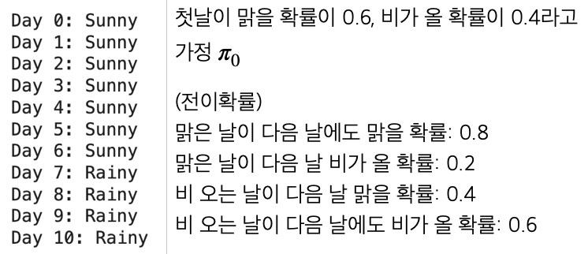
3.7 인구 동태
100-벡터 \((x_t)_i\)는 \(t\) 시점의 \((i-1)\)세 인구이다. 100-벡터 \(b\)의 \(b_i\)는 \((i-1)\)세의 평균 출생률이다. 가임 연령을 고려하면 \(b_i = 0\) for \(i < 13\) or \(i > 50\)이다. 만약 사망, 이민 없다고 가정하면 내년 0세 인구는 \((x_{t+1})_1 = b^T x_t\)이다.
나이 \(i\)세 \((t+1)\) 시점의 인구수: \((x_{t+1})_{i+1} = (1 - d_i)(x_t)_i, \; i = 1, 2, \ldots, 99\)
인구 동태 모형: \(x_{t+1} = Ax_t, \; t = 1, 2, \ldots\)
전이행렬 \(A\):
\[A = \begin{bmatrix} b_1 & b_2 & b_3 & \cdots & b_{98} & b_{99} & b_{100} \\ 1-d_1 & 0 & 0 & \cdots & 0 & 0 & 0 \\ 0 & 1-d_2 & 0 & \cdots & 0 & 0 & 0 \\ \vdots & \vdots & \vdots & \ddots & \vdots & \vdots & \vdots \\ 0 & 0 & 0 & \cdots & 1-d_{98} & 0 & 0 \\ 0 & 0 & 0 & \cdots & 0 & 1-d_{99} & 0 \end{bmatrix}\]
이민을 고려한 인구 동태 모형: \(x_{t+1} = Ax_t + u_t\)
간단한 인구동태 방정식: \(P_{t+1} = P_t + (B_t - D_t) + M_t\)
import numpy as np
import matplotlib.pyplot as plt
initial_population = 330_000_000
birth_rate = 12.4 / 1000
death_rate = 8.9 / 1000
annual_net_migration = 1_000_000
years = 10
population = np.zeros(years + 1)
population[0] = initial_population
for t in range(1, years + 1):
births = population[t-1] * birth_rate
deaths = population[t-1] * death_rate
population[t] = population[t-1] + births - deaths + annual_net_migration
for t in range(years + 1):
print(f"Year {2023 + t}: {population[t]:,.0f}")3.8 전염병 동태
전염 역학 모델은 전염병의 전파와 확산을 연구하는 분야로, 질병의 전염 방식과 전파 속도를 이해하고 예측하는 데 중점을 둔다.
SIRD 모델 상태 \(x_t = (S, I, R, D)\), \(S + I + R + D = 1\)
| 상태 | 기호 | 설명 |
|---|---|---|
| 감염 가능 | \(S\) | 현재 비감염이지만 감염될 수 있는 사람들 |
| 감염 | \(I\) | 현재 질병에 감염된 사람들 |
| 회복 | \(R\) | 질병을 회복하고 면역을 획득한 사람들 |
| 사망 | \(D\) | 질병으로 사망한 사람들 |
약학 모델 동력학: \(\beta\): 감염율, \(\gamma\): 회복율, \(\mu\): 사망율
\[\frac{dS}{dt} = -\beta SI, \qquad \frac{dI}{dt} = \beta SI - \gamma I - \mu I\]
\[\frac{dR}{dt} = \gamma I, \qquad \frac{dD}{dt} = \mu I\]
사례연구: \(x_t = (0.99, 0.01, 0, 0)\), \(\beta = 0.3\), \(\mu = 0.02\), \(\gamma = 0.1\) (전염 상태 잔류 88%)
\[x_{t+1} = Ax_t, \quad A = \begin{bmatrix} 0.99 & 0.1 & 0 & 0 \\ 0.01 & 0.88 & 0 & 0 \\ 0 & 0.1 & 1 & 0 \\ 0 & 0.02 & 0 & 1 \end{bmatrix}\]
import numpy as np
from scipy.integrate import odeint
import matplotlib.pyplot as plt
S0, I0, R0, D0 = 0.99, 0.01, 0.0, 0.0
initial_conditions = [S0, I0, R0, D0]
beta, gamma, mu = 0.3, 0.1, 0.02
def sird_model(y, t, beta, gamma, mu):
S, I, R, D = y
dS_dt = -beta * S * I
dI_dt = beta * S * I - gamma * I - mu * I
dR_dt = gamma * I
dD_dt = mu * I
return [dS_dt, dI_dt, dR_dt, dD_dt]
t = np.linspace(0, 160, 160)
solution = odeint(sird_model, initial_conditions, t, args=(beta, gamma, mu))
S, I, R, D = solution.T
plt.figure(figsize=(10, 6))
plt.plot(t, S, label='Susceptible'); plt.plot(t, I, label='Infected')
plt.plot(t, R, label='Recovered'); plt.plot(t, D, label='Deceased')
plt.xlabel('Time (days)'); plt.ylabel('Proportion of Population')
plt.legend(); plt.title('SIRD Model'); plt.grid(True); plt.show()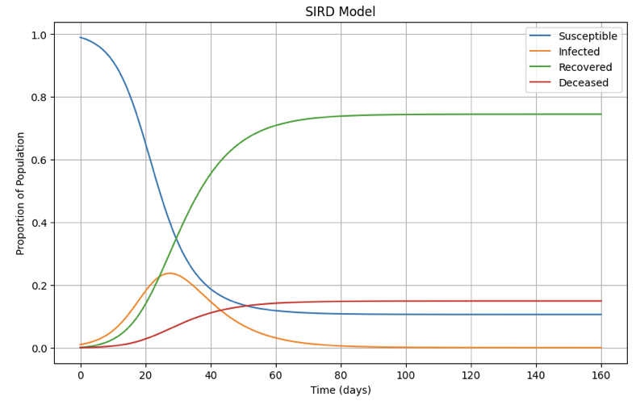
4 고유치와 고유벡터
4.1 기초
4.1.1 개념
고유치·고유벡터 (Eigenvalue·Eigenvector)
특정 벡터(고유벡터)가 행렬 \(A\)에 의해 변환될 때, 방향은 변하지 않고 크기만 일정 비율로 변한다면, 이 비율을 고유치(eigenvalue), 해당 벡터를 고유벡터(eigenvector)라고 한다.
\[A\mathbf{v} = \lambda\mathbf{v}\]
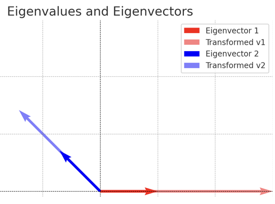
위 그래프는 행렬 \(A = \begin{bmatrix} 3 & 1 \\ 0 & 2 \end{bmatrix}\)의 고유치 \((\lambda = 3, 2)\)와 고유벡터의 변환을 시각적으로 보여준다. 고유벡터의 방향은 행렬 변환 후에도 유지되며, 크기만 고유치 값에 따라 변한다.
4.1.2 통계학 활용
| 방법론 | 활용 |
|---|---|
| PCA | 공분산행렬의 고유치→주성분 중요도, 차원 축소 |
| LDA | 클래스 간/내 분산 행렬의 고유치→최적 분리 축 |
| MDS | 거리 행렬의 고유치 분해→저차원 시각화 |
| 공분산 분석 | 고유치 0에 가까우면 변수 간 선형 종속 암시 |
| SVD | 추천 시스템, 텍스트 분석(LSA)에서 사용 |
| 시계열 AR | 고유치 > 1이면 시스템 불안정 |
주성분 분석(PCA): 공분산 행렬에서 가장 큰 고유치는 데이터의 분산을 가장 많이 설명하는 방향(주성분)을 나타낸다. 변수 100개로 구성된 데이터도 2~3개의 주성분만 선택해 차원을 축소할 수 있다.
선형 판별 분석(LDA): 클래스 간 분산 행렬과 클래스 내 분산 행렬의 비율로 구성된 행렬의 고유치를 계산하여 최적의 분리 축을 결정한다.
다차원 척도법(MDS): 거리 행렬을 고유치 분해하여 데이터를 저차원 공간에 배치한다.
행렬 분해 및 차원 축소: 고유치와 고유벡터는 특이값 분해(SVD), 고유분해(Eigendecomposition)의 핵심으로 차원 축소, 데이터 압축, 노이즈 제거 등에 사용된다.
4.2 고유치·고유벡터 구하기
대칭행렬 \(A_{n \times n}\)에 대하여 고유치 \(\lambda\), 고유벡터 \(\mathbf{v}\)는 다음 방정식이 성립한다.
\[A\mathbf{v} = \lambda\mathbf{v}\]
4.2.1 고유치 (Eigenvalue) 구하기
고유방정식
\[\det(A - \lambda I) = 0\]
을 만족하는 \(\lambda\)를 고유치라 한다. 고유치는 행렬 \(A\)의 차수만큼 존재한다: \(\lambda_1, \lambda_2, \ldots, \lambda_n\)
4.2.2 고유벡터 (Eigenvector) 구하기
\(A\mathbf{v}_i = \lambda_i \mathbf{v}_i\)를 만족하는 벡터 \(\mathbf{v}\)를 고유벡터라 한다.
\(\det(A - \lambda I) = 0\)(singular)가 성립하므로 고유벡터는 무수히 많이 존재한다.
고유벡터 중 Norm(\(\mathbf{v}'\mathbf{v} = 1\))이 1인 정규 고유벡터를 주성분분석에서 사용한다.
4.3 고유치 활용
4.3.1 고유치 분해 (Eigenvalue Decomposition)
고유치 분해
정방행렬 \(A_{n \times n}\)의 고유치 \((\lambda_i)\)를 대각원소로 하는 대각행렬 \(\Lambda\), 고유벡터 \((\mathbf{v}_i)\)로 이루어진 직교 행렬 \(Q\)라 하면:
\[A = Q\Lambda Q^{-1}\]
4.3.2 주성분분석
데이터 행렬: \(X_{n \times p}\) (변수 개수 \(p\))
- \(\mathbf{y} = P\mathbf{x}\): 원 변수의 선형결합(선형계수 행렬은 고유벡터)으로 주성분 변수를 만든다.
- \(X'X\)의 고유치 분해: \(X'X = Q\Lambda Q^T\) (\(X'X\)는 대칭행렬이므로 \(Q^T = Q^{-1}\))
- \(X\)의 공분산행렬로부터 고유치와 정규 고유벡터(\(\|\mathbf{v}\|=1\))를 구하여 서로 독립인 차원으로 변환한다.
- 공분산행렬에 대한 고유치, 고유벡터: \(COV_{p \times p} \mathbf{v} = \lambda \mathbf{v}\)
- 공분산 행렬은 양의 정부호 행렬이므로 변수의 차수만큼의 고유치, 그에 대응하는 고유벡터가 존재한다.
- 주요 2~3개 차원만으로 \(p\)차원의 원변수 변동(정보)을 축약한다. 이를 주성분분석이라 한다.
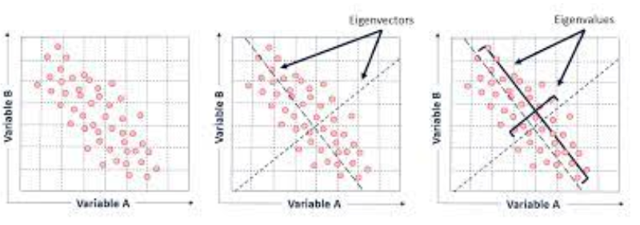
4.3.3 특이값 분해 (SVD, Singular Value Decomposition)
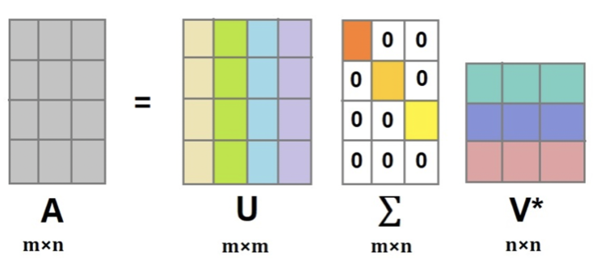
| 구성 | 정의 |
|---|---|
| 직교행렬 \(U\) (\(UU' = I\)) | \(AA'\)의 고유벡터 |
| 직교행렬 \(V'\) (\(V'V = I\)) | \(A'A\)의 고유벡터 |
| 대각행렬 \(\Sigma\) | \(AA'\), \(A'A\) 고유치의 제곱근을 대각원소로 |
4.3.4 Cholesky 분해
Cholesky 분해
대칭행렬 \(A\)가 양의 정부호 행렬일 경우:
\[A = LL^T, \quad L: \text{대각원소가 양인 하단 삼각행렬}\]
【활용】 \(A\mathbf{x} = \mathbf{b}\) (연립방정식) → \(LL^T \mathbf{x} = \mathbf{b}\) → \(\mathbf{x} = (L^{-1})'L^{-1}\mathbf{b}\)
최소제곱추정과 같은 최적해를 구할 때 사용하면 빠른 연산이 가능하다.
import numpy as np
A = np.array([[1,2,3], [4,5,7],[8,9,10]])
import numpy.linalg as la
val, vec = la.eig(A)
val, vec【결과】 (array([17.71571559, -1.44163052, -0.27408507]), array([[-0.21078452, -0.49872133, 0.47929184], [-0.52147269, -0.47685414, -0.81047488], [-0.82682291, 0.7238005, 0.33676373]]))
import numpy as np
A = np.array([[1,2,3], [4,5,7],[8,9,10]])
import numpy.linalg as la
val, vec = la.eig(A)
S = np.diag(val); P = vec
P @ S @ la.inv(P)【결과】 array([[ 1., 2., 3.], [ 4., 5., 7.], [ 8., 9., 10.]])
#SVD decomposition
u, s, vh = np.linalg.svd(A, full_matrices=True)
u, s, vh【결과】 (array([[-0.19462586, -0.6193003, -0.76064966], [-0.5071685, -0.6002356, 0.61846369], [-0.83958376, 0.50614657, -0.19726824]]), array([18.62202941, 1.46779937, 0.25609691]), array([[-0.48007495, -0.56284671, -0.67285334], [ 0.70100172, 0.21497525, -0.67998694], [ 0.52737523, -0.79811604, 0.29135228]]))
#Cholesky decomposition
import numpy as np
A = np.array([[25,15,-5], [15,18,0],[-5,0,11]])
np.linalg.cholesky(A)【결과】 array([[ 5., 0., 0.], [ 3., 3., 0.], [-1., 1., 3.]])
#확인 LL'
np.linalg.cholesky(A) @ np.linalg.cholesky(A).T【결과】 array([[25., 15., -5.], [15., 18., 0.], [-5., 0., 11.]])
5 행렬미분
5.1 미분 공식
5.1.1 벡터미분
상수벡터 \(\mathbf{a}_n = (a_1, a_2, \ldots, a_n)^T\), 확률변수 벡터 \(\mathbf{x}_n = (x_1, x_2, \ldots, x_n)^T\), \(x_i \sim (iid) f(x)\)는 확률표본이다.
\[\frac{\partial(\mathbf{a}'\mathbf{x})}{\partial \mathbf{x}} = \mathbf{a}, \qquad \frac{\partial(\mathbf{x}'\mathbf{a})}{\partial \mathbf{x}} = \mathbf{a}\]
5.1.2 이차형식 미분
\[\frac{\partial(\mathbf{x}'A\mathbf{x})}{\partial \mathbf{x}} = (A + A')\mathbf{x}\]
만약 \(A\)가 대칭행렬이면: \(\dfrac{\partial(\mathbf{x}'A\mathbf{x})}{\partial \mathbf{x}} = 2A\mathbf{x}\)
5.2 이차형식
5.2.1 이차형식 정의
이차형식 (Quadratic Form)
\[Q(x_1, x_2, \ldots, x_n) = \mathbf{x}'A\mathbf{x}\]
- 2차형식의 경우 대칭행렬인 \(A\)는 적어도 한 개는 존재한다.
5.2.2 이차형식 종류
대칭행렬 \(A\), 이차형식 \(Q = \mathbf{x}'A\mathbf{x}\)에 대하여:
| 종류 | 조건 |
|---|---|
| 양의 정부호 (positive definite) | 모든 \(x \neq 0\)에 대하여 \(Q > 0\) |
| 양의 반부호 (positive semidefinite) | 모든 \(x \neq 0\)에 대하여 \(Q \geq 0\) |
5.2.3 주축정리 (Principal Axes Theorem)
주축정리
이차형식 \(\mathbf{x}'A\mathbf{x}\)을 교차항이 없는 이차형식 \(\mathbf{y}'D\mathbf{y}\)으로 변환하는 직교변환 \(\mathbf{x} = P\mathbf{y}\)가 존재한다. \(P\)를 주축행렬이라 하고 대칭행렬 \(A\)의 고유벡터로 이루어져 있다.
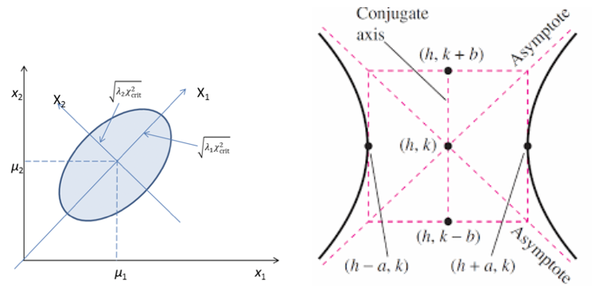
5.2.4 이차형식과 고유치 관계
| 이차형식 | 고유치 |
|---|---|
| 양의 정부호 | 모든 고유치 > 0 |
| 양의 반부호 | 모든 고유치 ≥ 0 |
| 역행렬도 양의 정부호 | 양의 정부호 행렬의 역행렬도 양의 정부호 |
| 공분산 행렬 | 항상 양의 정부호 |
5.3 이차형식 만들기
\[Q(x) = x_1^2 + 2x_2^2 - 7x_3^2 - 4x_1 x_2 + 8x_1 x_3\]
제곱항은 그대로 대각원소로, 교차항은 1/2로 하여 각 셀에 배분한다.
\[Q(x) = \begin{bmatrix} x_1 & x_2 & x_3 \end{bmatrix} \begin{bmatrix} 1 & -2 & 4 \\ -2 & 2 & 0 \\ 4 & 0 & -7 \end{bmatrix} \begin{bmatrix} x_1 \\ x_2 \\ x_3 \end{bmatrix} = \mathbf{x}'A\mathbf{x}\]
- \(\mathbf{x} = P\mathbf{y}\): 주축행렬 \(P\)는 대칭행렬 \(A\)의 고유벡터이다.
- \(A\)의 고유치를 대각원소로 하는 행렬 \(D = diag(\lambda_1, \lambda_2, \lambda_3)\)를 이용하여 교차항이 없는 이차형식으로 변형한다.
- \(Q(x) = \mathbf{x}'A\mathbf{x} \implies Q(y) = \mathbf{y}'D\mathbf{y}\) (\(\mathbf{x} = P\mathbf{y}\))
5.4 선형 회귀모형
5.4.1 데이터 구조
목표변수 1개, \(p\)개 예측변수, 표본크기 \(n\)인 데이터를 가정하면 선형 회귀모형은:
\[\mathbf{y} = X\boldsymbol{\beta} + \mathbf{e}\]
\[\begin{bmatrix} y_1 \\ y_2 \\ \vdots \\ y_n \end{bmatrix} = \begin{bmatrix} 1 & x_{11} & x_{12} & \cdots & x_{1p} \\ 1 & x_{21} & x_{22} & \cdots & x_{2p} \\ \vdots & \vdots & \vdots & \ddots & \vdots \\ 1 & x_{n1} & x_{n2} & \cdots & x_{np} \end{bmatrix} \begin{bmatrix} a \\ b_1 \\ \vdots \\ b_p \end{bmatrix} + \begin{bmatrix} e_1 \\ e_2 \\ \vdots \\ e_n \end{bmatrix}\]
5.4.2 예측변수 데이터 행렬·벡터
\[X_{n \times p} = \begin{bmatrix} \mathbf{x}_1 & \mathbf{x}_2 & \cdots & \mathbf{x}_p \end{bmatrix}, \qquad \mathbf{x}_k = \begin{bmatrix} x_{1k} \\ x_{2k} \\ \vdots \\ x_{nk} \end{bmatrix}\]
5.4.3 확률변수 벡터, 평균벡터, 공분산행렬
\[\mathbf{x} = \begin{bmatrix} x_1 \\ x_2 \\ \vdots \\ x_p \end{bmatrix}, \quad E(x_i) = \mu_i, \quad V(x_i) = \sigma_{ii}, \quad COV(x_i, x_j) = \sigma_{ij}\]
\[E(\mathbf{x}) = \boldsymbol{\mu} = \begin{bmatrix} \mu_1 \\ \mu_2 \\ \vdots \\ \mu_p \end{bmatrix}, \qquad COV(\mathbf{x}) = \Sigma = \begin{bmatrix} \sigma_{11} & \sigma_{12} & \cdots & \sigma_{1p} \\ \sigma_{21} & \sigma_{22} & \cdots & \sigma_{2p} \\ \vdots & \vdots & \ddots & \vdots \\ \sigma_{p1} & \sigma_{p2} & \cdots & \sigma_{pp} \end{bmatrix}\]
상수벡터 \(\mathbf{a} = (a_1, a_2, \ldots, a_p)^T\)에 대하여:
\[E(\mathbf{a}'\mathbf{x}) = \mathbf{a}'\boldsymbol{\mu}, \qquad V(\mathbf{a}'\mathbf{x}) = \mathbf{a}'\Sigma\mathbf{a}\]
5.4.4 선형 회귀모형
\[\mathbf{y} = X\mathbf{b} + \mathbf{e}, \qquad \mathbf{e} \sim N(\mathbf{0}, \sigma^2 I)\]
최소제곱법 추정
\[\min_{\mathbf{b}} \mathbf{e}'\mathbf{e} = \min_{\mathbf{b}} (\mathbf{y} - X\mathbf{b})'(\mathbf{y} - X\mathbf{b})\]
\[Q(\mathbf{b}) = \mathbf{y}'\mathbf{y} + \mathbf{b}'X'X\mathbf{b} - 2\mathbf{y}'X\mathbf{b}\]
\[\frac{\partial Q}{\partial \mathbf{b}} = 2X'X\mathbf{b} - 2X'\mathbf{y} = 0 \implies \hat{\mathbf{b}} = (X'X)^{-1}X'\mathbf{y}\]
적합치·잔차
\[\hat{\mathbf{y}} = X\hat{\mathbf{b}} = X(X'X)^{-1}X'\mathbf{y} = H\mathbf{y}, \qquad H = X(X'X)^{-1}X' \; \text{(hat 행렬)}\]
\[\hat{\mathbf{e}} = \mathbf{y} - \hat{\mathbf{y}} = (I - H)\mathbf{y}\]
\(H\)는 대칭행렬이고 멱등행렬이다: \(HH = H\), \(H' = H\). \((I-H)\)도 멱등행렬이다.
잔차의 분포: \(\hat{\mathbf{e}} \sim N(\mathbf{0}, \sigma^2(I-H))\)
목표변수 분해: \(\mathbf{y} = H\mathbf{y} + (I-H)\mathbf{y}\) = (설명하는 변동) + (설명하지 못하는 변동)
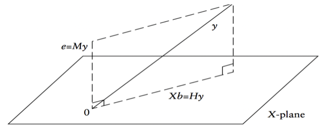
추정치 분포
\[E(\hat{\mathbf{b}}) = (X'X)^{-1}X'E(\mathbf{y}) = (X'X)^{-1}X'X\mathbf{b} = \mathbf{b}\]
\[V(\hat{\mathbf{b}}) = \sigma^2(X'X)^{-1}, \qquad \hat{\mathbf{b}} \sim N(\mathbf{b},\; \sigma^2(X'X)^{-1})\]
\[\hat{\sigma}^2 = MSE = \frac{SSE}{n-p-1}\]
변동 분해 ANOVA
\[SST = \sum(y_i - \bar{y})^2 = \mathbf{y}'(I - \tfrac{1}{n}J)\mathbf{y}\]
\[SSE = \sum(y_i - \hat{y}_i)^2 = \mathbf{y}'(I-H)\mathbf{y}, \qquad \frac{SSE}{\sigma^2} \sim \chi^2(n-p-1)\]
\[SSR = \hat{\mathbf{b}}'X'\mathbf{y} - \tfrac{1}{n}\mathbf{y}'J\mathbf{y} = \mathbf{y}'(H - \tfrac{1}{n}J)\mathbf{y}, \qquad \frac{SSR}{\sigma^2} \sim \chi^2(p)\]
\[R^2 = \frac{SSR}{SST} = 1 - \frac{SSE}{SST}, \qquad F = \frac{SSR/p}{SSE/(n-p-1)} \sim F(p,\; n-p-1)\]
분산분석 표
| 변동 | 제곱변동 | 자유도 | 평균제곱 | F |
|---|---|---|---|---|
| 회귀 | \(SSR\) | \(p\) | \(MSR = \frac{SSR}{p}\) | \(\frac{MSR}{MSE}\) |
| 오차 | \(SSE\) | \(n-p-1\) | \(MSE = \frac{SSE}{n-p-1}\) | |
| 총변동 | \(SST\) | \(n-1\) | \(E(MSE) = \sigma^2\), \(E(MSR) = \sigma^2 + \mathbf{b}_1^2\sum(x_i - \bar{x})^2\) |